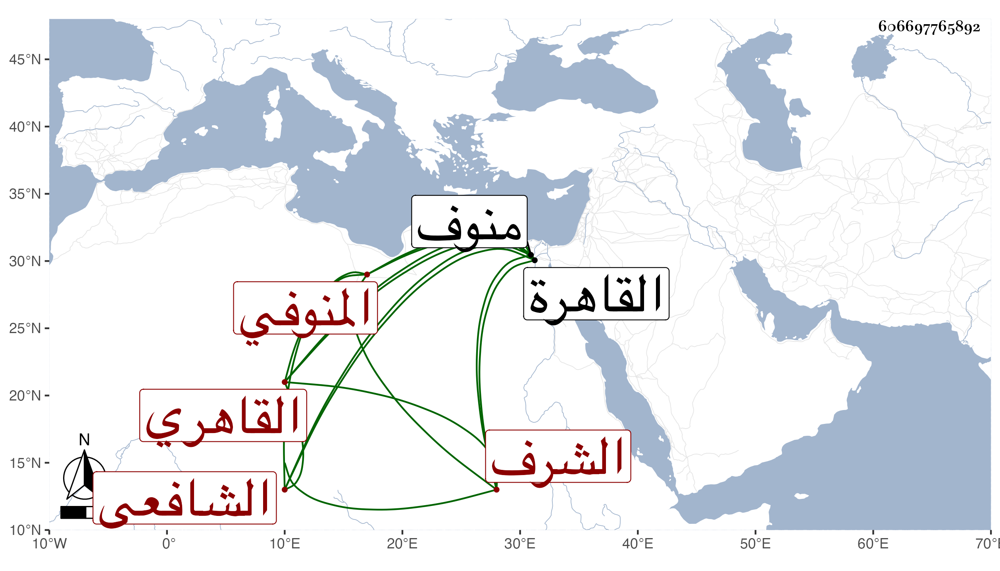

0902Sakhawi.DawLamic.ITO20230111-ara1.EIS1600.606697765892
Biography ID: 606697765892
808
موسى بن يوسف بن موسى بن يوسف الشرف المنوفي القاهري الشافعي أخو زين الصالحين محمد الماضي ويعرف بشرف الدين المنوفي . ولد سنة ثلاث عشرة وثمانمائة بمنوف وحفظ القرآن والعمدة والمنهاج الفرعي والأصلي وألفية ابن ملك والملحة والورقات وعرض على الولي العراقي وغيره واشتغل على الشرف السبكي والتلواني والونائي وناب في القضاء وجلس بأخرة في حانوت الجورة وامتحن حين تكلمه على جامع منوف لما ولي قضاءها وقام عليه جماعة من أعيانها وطلبوه إلى القاهرة فأودع الترسيم على خروجه من حساب الوقف مدة تكلمه فلم ينهض وخلص بعد كلفة ، وخطب بمدرسة سودون من زاده وغيرها ، وكان ساكنا خيرا مديما للتلاوة متميزا في صناعته قانعا متقللا . مات في ذي الحجة سنة أربع وثمانين ودفن بحوش سعيد السعداء رحمه الله .
